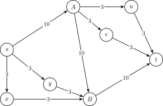

OI Wiki · prijevod · Teorija grafovaOI Wiki · translation · Graph theory
Minimalni rezMinimum cut
Sadržaj
Pojmovi
Rez
Za mrežu \(G=(V,E)\) rez je definiran kao particija skupa vrhova: svi se vrhovi podijele u dva skupa, \(S\) i \(T=V-S\), pri čemu je izvor \(s\in S\), a ponor \(t\in T\).
Kapacitet reza
Kapacitet reza \((S,T)\), u oznaci \(c(S,T)\), definiramo kao zbroj kapaciteta svih bridova koji idu iz \(S\) u \(T\), tj. \(c(S,T)=\sum_{u\in S,v\in T}c(u,v)\). Naravno, \(c(S,T)\) možemo označavati i s \(c(s,t)\).
Minimalni rez
Minimalni rez (min cut) znači pronaći rez \((S,T)\) čiji je kapacitet \(c(S,T)\) najmanji.
Dokaz
Teorem o maksimalnom toku i minimalnom rezu
Vidi odjeljak o teoremu o maksimalnom toku i minimalnom rezu na stranici Maksimalni tok.
Kôd
Minimalni rez
Po teoremu o maksimalnom toku i minimalnom rezu izravno dobivamo sljedeći kôd:
Primjer koda
#include <algorithm>
#include <cstdio>
#include <cstring>
#include <queue>
constexpr int N = 1e4 + 5, M = 2e5 + 5;
int n, m, s, t, tot = 1, lnk[N], ter[M], nxt[M], val[M], dep[N], cur[N];
void add(int u, int v, int w) {
ter[++tot] = v, nxt[tot] = lnk[u], lnk[u] = tot, val[tot] = w;
}
void addedge(int u, int v, int w) { add(u, v, w), add(v, u, 0); }
int bfs(int s, int t) {
memset(dep, 0, sizeof(dep));
memcpy(cur, lnk, sizeof(lnk));
std::queue<int> q;
q.push(s), dep[s] = 1;
while (!q.empty()) {
int u = q.front();
q.pop();
for (int i = lnk[u]; i; i = nxt[i]) {
int v = ter[i];
if (val[i] && !dep[v]) q.push(v), dep[v] = dep[u] + 1;
}
}
return dep[t];
}
int dfs(int u, int t, int flow) {
if (u == t) return flow;
int ans = 0;
for (int &i = cur[u]; i && ans < flow; i = nxt[i]) {
int v = ter[i];
if (val[i] && dep[v] == dep[u] + 1) {
int x = dfs(v, t, std::min(val[i], flow - ans));
if (x) val[i] -= x, val[i ^ 1] += x, ans += x;
}
}
if (ans < flow) dep[u] = -1;
return ans;
}
int dinic(int s, int t) {
int ans = 0;
while (bfs(s, t)) {
int x;
while ((x = dfs(s, t, 1 << 30))) ans += x;
}
return ans;
}
int main() {
scanf("%d%d%d%d", &n, &m, &s, &t);
while (m--) {
int u, v, w;
scanf("%d%d%d", &u, &v, &w);
addedge(u, v, w);
}
printf("%d\n", dinic(s, t));
return 0;
}
Rekonstrukcija rješenja
Sve vrhove skupa \(S\) možemo pronaći tako da iz izvora \(s\) pokrenemo DFS i svaki put prolazimo samo bridovima čiji je preostali kapacitet veći od \(0\).
void dfs(int u) {
vis[u] = 1;
for (int i = lnk[u]; i; i = nxt[i]) {
int v = ter[i];
if (!vis[v] && val[i]) dfs(v);
}
}
Broj bridova u rezu
Ako tražimo rez s najmanjim brojem bridova, jednostavno postavimo kapacitete svih bridova na \(1\) i jednom izračunamo minimalni rez. Ako tražimo minimalni rez s najmanjim brojem bridova, postoje dva pristupa:
-
Kapacitet svakog brida \(c(u,v)\) zamijenimo s \(c(u,v)(|E| + 1) + 1\) i na novom grafu izračunamo minimalni rez; to je minimalni rez izvornog grafa s najmanje bridova. Kapacitet minimalnog reza novog grafa podijeljen s \(|E| + 1\) i zaokružen nadolje daje minimalni rez izvornog grafa, a ostatak je broj bridova u rezu.
To odgovara traženju leksikografski najmanjeg reza u kojem je veličina reza prvi, a broj bridova u rezu drugi ključ. Budući da je koeficijent \(|E| + 1\) strogo veći od ukupnog broja bridova, a broj bridova u rezu ne premašuje ukupni broj bridova, broj bridova u rezu ne može, kakav god bio, poništiti utjecaj veličine reza, pa je dobiveni rez sigurno minimalni rez izvornog grafa; među minimalnim rezovima izvornog grafa onaj s najmanje bridova postaje minimalni rez novog grafa.
Uočite da ispravnost ovog pristupa počiva na pretpostavci da su svi kapaciteti cijeli brojevi: samo tada broj bridova u rezu \(k\le|E|<|E|+1\) sigurno ne „prenosi” u viši razred. Ako su kapaciteti racionalni, najprije ih pomnožimo zajedničkim nazivnikom da postanu cijeli; ako su kapaciteti proizvoljni realni brojevi ili bi cjelobrojni tip prelio, kapacitet jednostavno uzmemo kao uređeni par \((c(u,v),1)\), zbrajamo po komponentama, a uspoređujemo leksikografski. Tada svi algoritmi temeljeni na povećavajućim putovima koji se oslanjaju samo na zbrajanje, oduzimanje i uspoređivanje kapaciteta (npr. Dinicov algoritam) rade bez izmjena.
-
Najprije izračunamo maksimalni tok grafa, a zatim gradimo novi graf: za svaki luk rezidualne mreže (tj. za luk u smjeru brida koji nije zasićen i za obrnuti luk brida koji nosi tok) dodamo brid kapaciteta \(\infty\), a za svaki zasićeni brid dodamo brid kapaciteta \(1\); ponovnim računanjem minimalnog reza dobivamo najmanji broj bridova u rezu.
Bridovi minimalnog reza novog grafa sigurno ne uključuju bridove kapaciteta \(\infty\), tj. nijedan rezidualni luk ne ide iz \(S\) u \(T\). Stoga su u minimalnom rezu novog grafa svi prednji bridovi izvornog grafa zasićeni, a svi stražnji bridovi bez toka, što znači da je njegov kapacitet jednak maksimalnom toku pa je sigurno minimalni rez izvornog grafa. Obrnuto, prednji bridovi svakog minimalnog reza izvornog grafa su zasićeni, pa je njegov kapacitet u novom grafu upravo broj njegovih bridova. Dakle, minimalni rez novog grafa je minimalni rez izvornog grafa s najmanje bridova.
Česta pogreška: „postaviti na \(\infty\) samo kapacitete nezasićenih bridova”
Ovaj pristup ima čestu pogrešnu inačicu: nakon računanja maksimalnog toka kapacitete zasićenih bridova postaviti na \(1\), a nezasićenih na \(\infty\), i izravno izračunati minimalni rez. To se čini intuitivnim, ali je zapravo pogrešno. Protuprimjer je na slici dolje.

Kao na slici, maksimalni tok iznosi \(16\) (tj. svi izlazni bridovi iz \(s\) su zasićeni), maksimalni tok je jedinstven, a jedino brid \(A\to B\) nije zasićen. Svaki minimalni rez izvornog grafa ima \(3\) brida, ali nakon pogrešnog postavljanja kapaciteta minimalni rez novog grafa iznosi \(2\) i postiže se za \(S = \{s,x,y,B\}\). Kapacitet tog reza je \(20\), pa to nije minimalni rez izvornog grafa: njegovi prednji bridovi \(s\to A\) i \(B\to t\) jesu zasićeni, ali brid \(A\to B\), koji nosi tok, ide sa strane \(T\) natrag na stranu \(S\), a pogrešna inačica taj slučaj ne isključuje. U ispravnom pristupu \(A\to B\) nosi tok, pa se dodaje obrnuti brid \(B\to A\) kapaciteta \(\infty\), koji sprječava pojavu tog pogrešnog minimalnog reza.
Model problema 1
Zadano je \(n\) predmeta i dva skupa \(A,B\). Ako predmet nije stavljen u skup \(A\), to stoji \(a_i\), a ako nije stavljen u skup \(B\), stoji \(b_i\); uz to postoji nekoliko ograničenja oblika \(u_i,v_i,w_i\) koja znače da stoji \(w_i\) ako \(u_i\) i \(v_i\) nisu u istom skupu. Svaki predmet mora pripadati točno jednom skupu; treba odrediti najmanji trošak.
Ovo je klasičan zadatak s minimalnim rezom tipa izbor jedne od dviju mogućnosti. Za dva skupa postavimo izvor \(s\) i ponor \(t\); iz \(s\) u \(i\)-ti vrh povučemo brid kapaciteta \(a_i\), a iz \(i\)-tog vrha u \(t\) brid kapaciteta \(b_i\). Za ograničenje \(u,v,w\) između \(u\) i \(v\) povučemo dvosmjerni brid kapaciteta \(w\).
Uočimo da, kad izvor i ponor nisu povezani, to znači da je svaki vrh izabrao jedan od skupova. Prerezati brid prema \(s\) ili \(t\) znači ne staviti predmet u \(A\) odnosno \(B\), a prerezati brid između dvaju predmeta znači da ta dva predmeta nisu u istom skupu.
Minimalni rez je najmanji trošak.
Model problema 2
Zatvoreni podgraf maksimalne težine: zadan je usmjereni graf u kojem svaki vrh ima težinu (pozitivnu, negativnu ili \(0\)); treba odabrati podgraf najveće ukupne težine takav da su svi sljedbenici svakog vrha podgrafa također u podgrafu.
Postupak: uvedemo superizvor \(s\) i superponor \(t\). Ako vrh \(u\) ima pozitivnu težinu, iz \(s\) u \(u\) povučemo usmjereni brid čija je težina jednaka težini vrha; ako vrh \(u\) ima negativnu težinu, iz \(u\) u \(t\) povučemo usmjereni brid čija je težina suprotna težini vrha. Težine svih bridova izvornog grafa postavimo na \(\infty\). Izračunamo maksimalni tok; odgovor je zbroj svih pozitivnih težina umanjen za maksimalni tok.
Nekoliko kratkih tvrdnji za dokaz:
- Svaki dopustivi podgraf odgovara jednom rezu u mreži. Svaki rez dijeli mrežu na dva dijela, a iz dijela povezanog sa \(s\) nijedan brid ne vodi u drugi dio, pa je gornji uvjet zadovoljen. Ova je tvrdnja i nužna i dovoljna.
- Bridovi koje minimalni rez uklanja moraju biti incidentni s \(s\) ili s \(t\), jer bi im inače težina bila \(\infty\) i ne bi mogli biti u minimalnom rezu.
- Za odabrani podgraf vrijedi: ukupna težina \(=\) zbroj svih pozitivnih težina \(-\) zbroj težina neodabranih vrhova pozitivne težine \(+\) zbroj težina odabranih vrhova negativne težine. Kad ne odaberemo vrh pozitivne težine, prekida se njegov brid prema \(s\); kad odaberemo vrh negativne težine, prekida se njegov brid prema \(t\). Zbroj težina prekinutih bridova je kapacitet reza. Stoga gornja formula postaje: ukupna težina \(=\) zbroj svih pozitivnih težina \(-\) kapacitet reza.
- Zaključak: maksimalna ukupna težina \(=\) zbroj svih pozitivnih težina \(-\) minimalni rez \(=\) zbroj svih pozitivnih težina \(-\) maksimalni tok.
Zadaci za vježbu
Contents
Concepts
Cut
For a flow network \(G=(V,E)\), a cut is defined as a partition of the vertices: all vertices are divided into two sets \(S\) and \(T=V-S\), where the source \(s\in S\) and the sink \(t\in T\).
Capacity of a cut
We define the capacity \(c(S,T)\) of a cut \((S,T)\) as the sum of the capacities of all edges going from \(S\) to \(T\), i.e. \(c(S,T)=\sum_{u\in S,v\in T}c(u,v)\). Of course, we may also write \(c(s,t)\) for \(c(S,T)\).
Minimum cut
The minimum cut problem asks for a cut \((S,T)\) whose capacity \(c(S,T)\) is minimum.
Proof
Max-flow min-cut theorem
See the section on the max-flow min-cut theorem on the Maximum flow page.
Code
Minimum cut
By the max-flow min-cut theorem we directly obtain the following code:
Sample code
#include <algorithm>
#include <cstdio>
#include <cstring>
#include <queue>
constexpr int N = 1e4 + 5, M = 2e5 + 5;
int n, m, s, t, tot = 1, lnk[N], ter[M], nxt[M], val[M], dep[N], cur[N];
void add(int u, int v, int w) {
ter[++tot] = v, nxt[tot] = lnk[u], lnk[u] = tot, val[tot] = w;
}
void addedge(int u, int v, int w) { add(u, v, w), add(v, u, 0); }
int bfs(int s, int t) {
memset(dep, 0, sizeof(dep));
memcpy(cur, lnk, sizeof(lnk));
std::queue<int> q;
q.push(s), dep[s] = 1;
while (!q.empty()) {
int u = q.front();
q.pop();
for (int i = lnk[u]; i; i = nxt[i]) {
int v = ter[i];
if (val[i] && !dep[v]) q.push(v), dep[v] = dep[u] + 1;
}
}
return dep[t];
}
int dfs(int u, int t, int flow) {
if (u == t) return flow;
int ans = 0;
for (int &i = cur[u]; i && ans < flow; i = nxt[i]) {
int v = ter[i];
if (val[i] && dep[v] == dep[u] + 1) {
int x = dfs(v, t, std::min(val[i], flow - ans));
if (x) val[i] -= x, val[i ^ 1] += x, ans += x;
}
}
if (ans < flow) dep[u] = -1;
return ans;
}
int dinic(int s, int t) {
int ans = 0;
while (bfs(s, t)) {
int x;
while ((x = dfs(s, t, 1 << 30))) ans += x;
}
return ans;
}
int main() {
scanf("%d%d%d%d", &n, &m, &s, &t);
while (m--) {
int u, v, w;
scanf("%d%d%d", &u, &v, &w);
addedge(u, v, w);
}
printf("%d\n", dinic(s, t));
return 0;
}
Recovering the cut
We can find all vertices of the set \(S\) by running a DFS from the source \(s\), each time walking only along edges with residual capacity greater than \(0\).
void dfs(int u) {
vis[u] = 1;
for (int i = lnk[u]; i; i = nxt[i]) {
int v = ter[i];
if (!vis[v] && val[i]) dfs(v);
}
}
Number of cut edges
If we want the cut with the fewest edges, simply set all edge capacities to \(1\) and compute a minimum cut once. If we want the minimum cut with the fewest edges, there are two approaches:
-
Replace the capacity \(c(u,v)\) of every edge with \(c(u,v)(|E| + 1) + 1\) and compute a minimum cut on the new graph; this is the minimum cut of the original graph with the fewest cut edges. The capacity of the new graph's minimum cut divided by \(|E| + 1\) and rounded down is the original minimum cut, and the remainder is the number of cut edges.
This amounts to finding the lexicographically smallest cut with the cut size as the first key and the number of cut edges as the second key. Because the coefficient \(|E| + 1\) is strictly larger than the total number of edges, while the number of cut edges never exceeds the total number of edges, the number of cut edges can never, whatever it is, cancel out the effect of the cut size, so the cut found is certainly a minimum cut of the original graph; among the minimum cuts of the original graph, the one with the fewest cut edges becomes the minimum cut of the new graph.
Note that the correctness of this approach relies on all edge capacities being integers: only then is it guaranteed that the number of cut edges \(k\le|E|<|E|+1\) does not carry over into the higher digit. If the capacities are rational, first multiply by a common denominator to make them integers; if the capacities are arbitrary reals, or an integer type would overflow, simply take the capacity to be the pair \((c(u,v),1)\), add component-wise and compare lexicographically. Then every augmenting-path algorithm that relies only on adding, subtracting and comparing capacities (such as Dinic's algorithm) runs unchanged.
-
First compute the maximum flow of the graph, then build a new graph: for every arc of the residual graph (i.e. the forward arc of every unsaturated edge and the backward arc of every edge carrying flow) add an edge of capacity \(\infty\), and for every saturated edge add an edge of capacity \(1\); running a minimum cut again gives the minimum number of cut edges.
The cut edges of the new graph's minimum cut certainly contain no edge of capacity \(\infty\), i.e. no residual arc points from \(S\) to \(T\). Hence, in the new graph's minimum cut, all forward edges of the original graph are saturated and all backward edges carry no flow, which shows that its capacity equals the maximum flow, so it is certainly a minimum cut of the original graph. Conversely, the forward edges of any minimum cut of the original graph are all saturated, so its capacity in the new graph is exactly its number of cut edges. Therefore the minimum cut of the new graph is the minimum cut of the original graph with the fewest cut edges.
Common mistake: \"only set the capacities of unsaturated edges to \(\infty\)\"
This approach has a common incorrect version: after computing the maximum flow, set the capacities of saturated edges to \(1\) and of unsaturated edges to \(\infty\), and directly run a minimum cut. This seems intuitive but is actually wrong. A counterexample is shown in the figure below.
As shown, the maximum flow is \(16\) (i.e. all out-edges of \(s\) are saturated), the maximum flow is unique, and only the edge \(A\to B\) is unsaturated. Every minimum cut of the original graph has \(3\) cut edges, but after resetting the capacities as in the incorrect version, the minimum cut of the new graph is \(2\), attained at \(S = \{s,x,y,B\}\). The capacity of this cut is \(20\), so it is not a minimum cut of the original graph: although its forward edges \(s\to A\) and \(B\to t\) are saturated, the edge \(A\to B\), which carries flow, points from the \(T\) side back to the \(S\) side, and the incorrect version does not rule out this case. In the correct approach, \(A\to B\) carries flow, so a backward edge \(B\to A\) of capacity \(\infty\) is added, which prevents this incorrect minimum cut from appearing.
Problem model 1
There are \(n\) items and two sets \(A,B\). If an item is not put into set \(A\) it costs \(a_i\), and if it is not put into set \(B\) it costs \(b_i\); there are also several constraints of the form \(u_i,v_i,w_i\), meaning that it costs \(w_i\) if \(u_i\) and \(v_i\) are not in the same set. Every item must belong to exactly one set; find the minimum cost.
This is a classic choose one of two minimum cut problem. For the two sets we set up a source \(s\) and a sink \(t\); from \(s\) to the \(i\)-th vertex we add an edge of capacity \(a_i\), and from the \(i\)-th vertex to \(t\) an edge of capacity \(b_i\). For a constraint \(u,v,w\) we add a bidirectional edge of capacity \(w\) between \(u\) and \(v\).
Note that when the source and the sink are disconnected, every vertex has chosen one of the sets. Cutting an edge to \(s\) or \(t\) means not putting the item into \(A\) or \(B\) respectively, and cutting an edge between two items means that the two items are not in the same set.
The minimum cut is the minimum cost.
Problem model 2
Maximum weight closure: given a directed graph in which every vertex has a weight (positive, negative or \(0\)), choose a subgraph of maximum total weight such that every successor of every vertex in the subgraph is also in the subgraph.
Approach: create a super source \(s\) and a super sink \(t\). If a vertex \(u\) has positive weight, add a directed edge from \(s\) to \(u\) whose weight equals the vertex weight; if a vertex \(u\) has negative weight, add a directed edge from \(u\) to \(t\) whose weight is the negative of the vertex weight. Set the weights of all edges of the original graph to \(\infty\). Run a maximum flow; the answer is the sum of all positive weights minus the maximum flow.
A few short claims for the proof:
- Every valid subgraph corresponds to a cut in the flow network. Each cut divides the network into two parts, and the part connected to \(s\) has no edge pointing into the other part, so the condition above holds. This statement is both necessary and sufficient.
- The edges removed by a minimum cut must be incident to either \(s\) or \(t\), since otherwise their weight is \(\infty\) and they could not be part of a minimum cut.
- For the chosen subgraph, total weight \(=\) sum of all positive weights \(-\) sum of the weights of the unchosen positive-weight vertices \(+\) sum of the weights of the chosen negative-weight vertices. When we do not choose a positive-weight vertex, its edge to \(s\) is cut; when we choose a negative-weight vertex, its edge to \(t\) is cut. The sum of the weights of the cut edges is the capacity of the cut. Thus the formula above becomes: total weight \(=\) sum of all positive weights \(-\) capacity of the cut.
- Hence we conclude: maximum total weight \(=\) sum of all positive weights \(-\) minimum cut \(=\) sum of all positive weights \(-\) maximum flow.